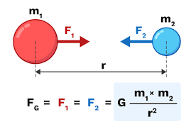
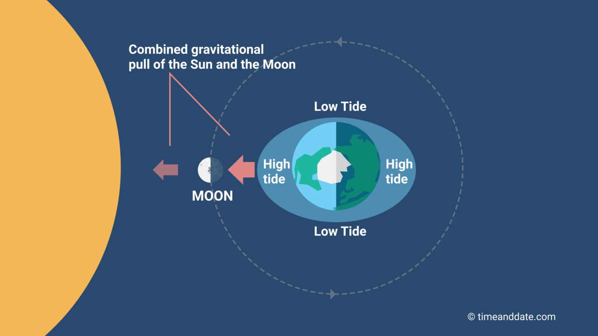

1. Optica: Teoria Culorilor și Experimentum Crucis
În lucrarea sa monumentală "Opticks" (1704), Newton a infirmat paradigma aristotelică ce a dominat gândirea științifică timp de milenii. El a demonstrat că lumina albă nu este o entitate pură și omogenă, ci un amestec heterogen de raze cu refrangibilități diferite.
Pentru a demonstra că prisma nu "pătează" lumina, ci doar o separă, Newton a izolat o singură rază colorată (monocromatică) din spectrul rezultat dintr-o primă prismă și a trecut-o printr-o a doua prismă.
- Observație: Raza și-a păstrat culoarea și unghiul de deviație specific.
- Concluzie: Culoarea este o proprietate intrinsecă a luminii, nu a materiei prin care trece.
Analiza Analitică a Spectrului
Newton a stabilit că gradul de refracție este invers proporțional cu lungimea de undă (concept definit ulterior), clasificând razele în funcție de deviația lor:
| Culoare | Refrangibilitate | Deviație unghiulară |
|---|---|---|
| Roșu | Minimă | Cea mai mică deviație |
| Violet | Maximă | Cea mai mare deviație |
2. Principia: Sinteza Newtoniana și Legea Universală
Publicată în 1687 sub patronajul lui Edmond Halley, "Philosophiae Naturalis Principia Mathematica" a înlocuit ipotezele calitative cu rigoarea geometrică și calculul matematic. Newton a fundamentat conceptul de gravitație nu ca o proprietate a obiectelor, ci ca o forță de atracție reciprocă între toate masele din Univers.
Expresia matematică a Gravitației Universale:
Unde G este constanta gravitațională, iar r este distanța dintre centrele maselor.

Pilonii cunoașterii în Principia
- Demonstrația Legilor lui Kepler: Newton a dovedit că orbitele eliptice ale planetelor sunt rezultatul matematic necesar al unei forțe care scade cu pătratul distanței (1/r2). Aceasta a fost prima validare teoretică a sistemului heliocentric.
- Teoria Mareelor: A explicat pentru prima dată fluxul și refluxul oceanelor ca fiind rezultatul atracției gravitaționale combinate a Lunii și a Soarelui asupra maselor de apă ale Pământului.
- Prezierea Formei Terestre: Aplicând legile dinamicii asupra unui corp în rotație, Newton a calculat că Pământul trebuie să fie un sferoid oblat (aplatizat la poli cu aproximativ 1/230 din diametrul său), fapt confirmat ulterior prin măsurători geodezice.
- Perturbările Orbitale: A înțeles că planetele nu atrag doar Soarele, ci se atrag și între ele, cauzând mici neregularități în orbite, concept care a dus ulterior la descoperirea planetei Neptun.

3. Matematică: Metoda Fluxiunilor și Analiza Modernă
În "anii ciumei" (1665-1666), Newton a realizat că geometria clasică era insuficientă pentru a descrie mișcarea accelerată sau variația continuă. Soluția sa a fost Metoda Fluxiunilor, un instrument matematic capabil să calculeze ratele instantanee de schimbare.
- Fluienți: Cantități care variază în timp (echivalentul variabilelor de astăzi).
- Fluxiuni: Viteza cu care un fluent se schimbă (conceptul modern de derivată).
- Problema Inversă: Calcularea fluentului pornind de la fluxiune (conceptul de integrală sau aria de sub curbă).
Marea Dispută: Newton vs. Leibniz
Deși Newton și-a dezvoltat ideile în 1666, nu le-a publicat imediat, preferând să le circule sub formă de manuscrise private. Între timp, în 1675, Gottfried Wilhelm Leibniz a ajuns independent la concluzii similare, publicând lucrarea sa în 1684.
| Aspect | Abordarea lui Newton | Abordarea lui Leibniz |
|---|---|---|
| Notație | Puncte deasupra variabilei (˙x) - mai greu de utilizat în calcule complexe. | Notația "d/dx" și semnul integralei (∫) - mult mai practică și utilizată și astăzi. |
| Prioritate | Primul care a descoperit metoda. | Primul care a publicat și a oferit un limbaj matematic accesibil. |
Disputa a devenit violentă după anul 1700, când Newton l-a acuzat pe Leibniz de plagiat. Deși Royal Society a emis un raport favorabil lui Newton, istoricii moderni au stabilit că ambii matematicieni au ajuns la rezultate în mod independent, explorând căi diferite către același adevăr științific.
Impactul asupra Științei Moderne
Fără acest fundament matematic, Newton nu ar fi putut scrie Principia. Astăzi, calculul infinitezimal este utilizat în:
- Inginerie: Calculul forțelor de tensiune în poduri și clădiri.
- Astronomia modernă: Determinarea precisă a traiectoriilor sondelor spațiale.
- Economie: Optimizarea costurilor și analiza schimbărilor de piață.
Calculator de Fluxiuni (Derivate)
Newton a folosit calculul pentru a determina viteza instantanee a unui obiect. Introduceți o funcție de tip f(t) = at2 + bt pentru a calcula fluxiunea (derivata) în punctul dorit.